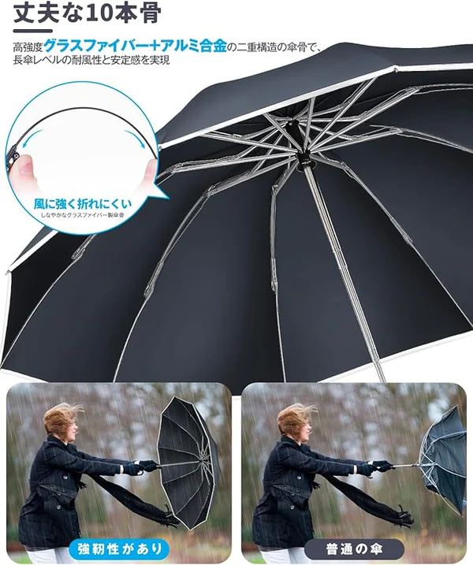

A reliable parasol is essential for facing Japan's harsh summers and unpredictable seasonal rains. This time, let's take a closer look at the stylish and multifunctional "UV Protection Parasol (UPF50+)". This parasol will elevate your everyday belongings to a new level.
Design in Solitude
The Quiet Beauty of a Carabiner Loop. True minimalism is about removing excess until only what is useful and beautiful remains. The Parasol embodies this philosophy flawlessly.
Stepping away from distracting, overly technical designs, it embraces a soft, matte color palette—ranging from serene lavender and sage green to timeless off-white and deep navy.

The full product lineup showcasing the muted, minimalist color palette on the clean platform steps.
But its most striking feature is the integrated loop handle. Engineered with a smooth, spring-loaded carabiner mechanism, it allows you to instantly secure the parasol to your briefcase, leather tote, or travel backpack.
It removes the friction of carrying an umbrella, freeing your hands to hold a morning matcha latte or simply rest in your pockets as you walk through the city.
Ultimate UV Protection
A Shield for Conscious Living. Sun care isn't just a seasonal routine; it’s a fundamental ritual for a healthy life. This parasol boasts a certified UPF 50+ rating, guaranteeing 100% UV protection. It creates an absolute barrier against intense solar radiation, shielding your skin from premature aging and sunburn..

Beyond blocking harmful light, the canopy features an advanced thermal insulation process. The moment you open it on a sweltering afternoon, you feel a distinct drop in temperature.
It acts as your own private patch of shade, cooling the air beneath it and transforming a hot, hectic commute into a calm, refreshing stroll. Purposeful Engineering: Built for Quiet Resilience.
A calm lifestyle values quality over quantity. Instead of buying cheap, disposable umbrellas that snap in sudden coastal gusts, investing in durable engineering brings peace of mind.

The Parasol features a robust internal architecture with double fiberglass ribs. This smart design offers structural flexibility, allowing the frame to flex naturally in strong winds rather than snapping or turning inside out.
Transitioning effortlessly from a dedicated sun shield to a rain-resistant umbrella, it keeps you protected in any weather with elegance and ease.
Section: Dimensions & Proportions — Designed for Effortless Travel
A truly minimalist object must respect your personal space while offering maximum utility. The architectural dimensions of the Parasol achieve a perfect balance between robust protective coverage and compact portability.

When deployed, the canopy spans a generous 105 cm (41.33 in) in diameter with a total height of 64 cm (25.2 in). This broad surface provides ample, complete coverage to shield you and your daily carry belongings from both harsh overhead sun and angled rain.
Yet, when closed, the advanced folding framework collapses down to a remarkably slim 37 cm (14.57 in) in length and a mere 4 cm (1.57 in) in width. It slides effortlessly into a briefcase, a luxury tote, or hooks seamlessly onto your pack without creating bulk, making it the ultimate lightweight companion for mindful commuters.
Seamless Usability
With a smooth, responsive one-touch automatic open and close mechanism, the canopy deploys in a fraction of a second. Whether you are stepping out of a taxi in Tokyo or entering a boutique cafe, the seamless automation ensures you stay dry and composed without any awkward fumbling.
Our Verdict: Is It Worth It?
For an audience that appreciates the finer details, the umbrella is a gift. It respects your aesthetic, unburdens your hands with its clever carabiner design, and offers unmatched climate comfort through its cooling thermal technology. It is a premium investment for those who choose to live, travel, and move with intention.
Rating: ⭐⭐⭐⭐⭐ (5/5)
— An absolute masterpiece for your daily ritual -
When purchasing high-end functional gear, authenticity and premium service are just as important as the product itself. To guarantee you receive the genuine model with full warranty support and seamless delivery across Japan and worldwide, we highly recommend purchasing directly from Hirado Life.
As a highly trusted and vetted boutique platform, Hirado Life (hirado-life.com) ensures an authentic, premium shopping experience tailored for the discerning customer.